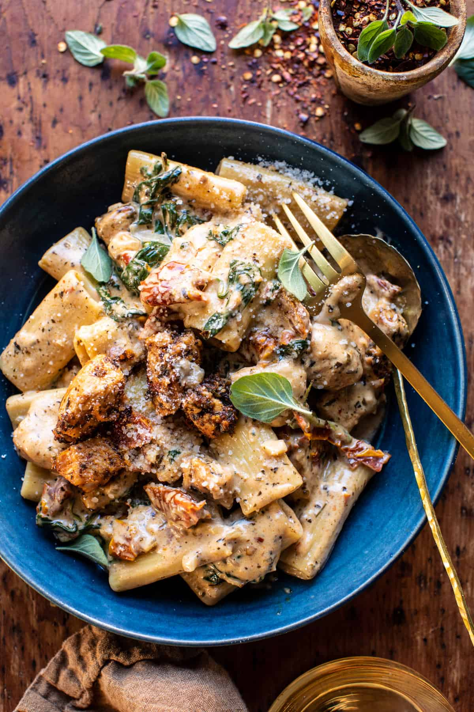

Creamy Sun-Dried Tomato Chicken Pasta

Description
This simple one pot Creamy Sun-Dried Tomato Chicken Pasta is the perfect winter dinner. Quick, easy, hearty, and so delicious! Pan-seared Italian seasoned chicken in a creamy sun-dried tomato spinach sauce. Cooked together with rigatoni pasta for a quick dinner made in one pot. Truly one of those all-in-one dinners that everyone at the table will love. Great for a weeknight, but equally fancy enough to serve up at your next holiday dinner. You can’t go wrong with this Tuscan style pasta.
Ingridients
- 1 (8 ounce) jar oil-packed sun-dried tomatoes
- 1 pound boneless skinless chicken breasts, cubed
- 4 teaspoons Italian seasoning
- 1 teaspoon paprika or smoked paprika
- red pepper flakes
- kosher salt and black pepper
- 3/4 cup grated parmesan cheese
- 2 tablespoons salted butter
- 1 medium shallot, chopped
- 2 cloves garlic, chopped
- 1 pound short cut pasta
- 1 cup heavy cream
- 2 teaspoons Dijon mustard
- 2 cups fresh baby spinach
- juice of 1 lemon
Instructions
- Drain 3 tablespoons of oil from the sun-dried tomato jar into a large pot or skillet with sides. Chop the sun-dried tomatoes and set aside.
- Set the pot over medium-high heat. Add the chicken, 3 teaspoons Italian seasoning, the paprika, and a pinch each of red pepper flakes, salt, and pepper. Cook until golden brown, 5 minutes. Add 1/4 cup parmesan, cook another minute, then remove the chicken from the pot.
- To the same pot, add the butter, shallot, garlic, and 1 teaspoon Italian seasoning. Cook until fragrant, about 3 minutes. Add 3 1/2 cups water. Bring to a boil, add the pasta, and cook, stirring often, until the pasta is al dente, 8 minutes. Stir in the cream, mustard, parmesan, spinach, and chopped sun-dried tomatoes. Slide the chicken and any juices left on the plate.
- Serve the pasta topped with lemon juice and fresh parmesan.
Home